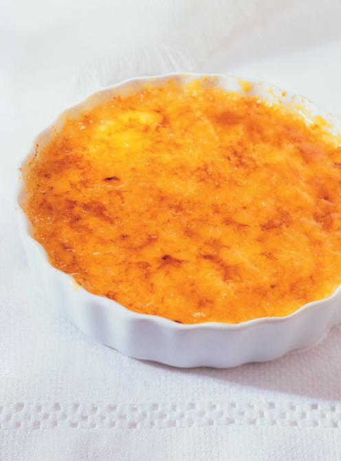

Reine de Saba chocolate cake

Description
This crème brûlée is exactly what you would expect. It has the signature crispy sugar on top that we all love to break.
Ingredients
- 2 1/4 cups (560 ml) 35% cream
- 1 vanilla bean, split lengthwise and seeds scraped
- 5 egg yolks
- 1/4 cup (55 g) sugar, plus more for caramelizing
Instructions
- With the rack in the middle position, preheat the oven to 325°F (165°C). Place four ¾ cup (180 ml) crème brûlée dishes or ramekins in a baking dish.
- In a saucepan over medium heat, heat the cream for 5 minutes with the vanilla, without boiling.
- In a bowl, whisk together the egg yolks and half (1/4 cup/55 g) of the sugar. Whisk in the hot cream. Pour the mixture into the ramekins. Pour hot water into the baking dish ¾ up the sides of the ramekins.
- Bake for 40 minutes. Remove the ramekins from the baking dish. Let cool, cover and refrigerate for 4 hours or until completely cooled.
- Sprinkle the crème brûlées with the remaining sugar and caramelize with a crème brûlée iron or a kitchen torch. You can also caramelize the crème brûlée under the broiler in the oven. Serve immediately.
Notes
The recipe comes from Ricardo Cuisine's website.
Back to main page